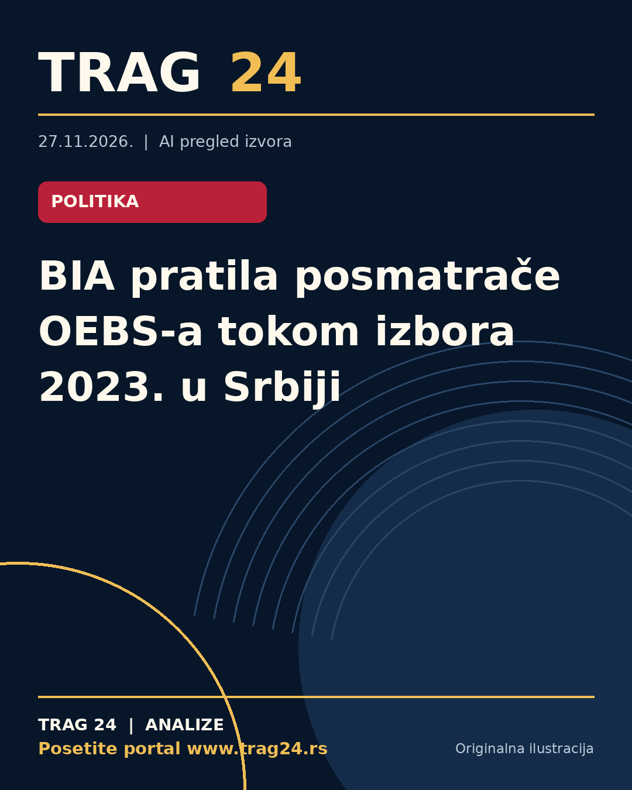

BIA pratila posmatrače OEBS-a tokom izbora 2023. u Srbiji

ŠTA SE DOGODILO
Tokom vanrednih parlamentarnih izbora u Srbiji održanih 17. decembra 2023, članove misije OEBS-a zadužene za posmatranje izbora pratili su pripadnici Bezbednosno informativne agencije (BIA). Praćenje je bilo usmereno na strane posmatrače, među kojima su bili Nemica Jana Bürgers i Irac Brian MacMahon, koji su u Srbiju stigli sredinom novembra i boravili u Novom Sadu tokom izbornog procesa.
HRONOLOGIJA
Posmatrači su u Beograd stigli 19. novembra, a tri dana kasnije prevezeni su u Novi Sad gde su pratili izbore naredni mesec. Od 22. novembra, svaki pokret Bürgersove i MacMahona u hotelu i prilikom sastanaka pratile su grupe agenata BIA. U to vreme u vrhu BIA su se dešavale promene rukovodilaca, sa Aleksandrom Vulinom koji je podneo ostavku 3. novembra, a njegov prvi zamenik Tomislav Radovanović preuzima upravljanje agencijom.
ŠTA NAVODE IZVORI
Iz istraživanja BIRN-a proističe da su članovi BIA imali ključeve od soba u kojima su smešteni posmatrači, angažovali su agente za pretres prostorija i posmatrali njihove sastanke i aktivnosti. Posmatrači su za nadzor saznali od novinara, a Brian MacMahon je izrazio stav da je takav nadzor neprihvatljiv i neobičan u okvirima OEBS-a. Jana Bürgers je navela da nije bilo jasno šta je cilj praćenja i da je ovakva praksa neuobičajena u njihovim misijama. Iz ODIHR-a nisu dali komentar na informacije o nadzoru.
ŠTA JE POTVRĐENO
Potvrđeno je da je BIA pratila i fotografisala ključne članove OEBS misije za posmatranje izbora u Srbiji. BIA nije odgovorila na pitanja da li su za praćenje imali sudski nalog. Posmatrači su potvrdili da su u toku boravka pratili njihove aktivnosti i da su o tome saznali od novinara.
ŠTA NIJE POTVRĐENO
Nije potvrđeno da li je praćenje bilo zasnovano na nekom sudskom nalogu ili zvaničnoj odluci, kao ni da li je korišćenje takvih metoda opravdano ili bilo povezano sa konkretnim bezbednosnim razlozima. Takođe, iz ODIHR-a nije stigao odgovor koji bi objasnio ili potvrdio praksu nadzora njihovih članova.
ŠTA OSTАJE OTVORENO: Ostaje nejasno zašto je BIA pratila posmatrače OEBS-a i koji je bio cilj takvog nadzora. Takođe, iako je poznato da su posmatrači bili pod nadzorom i da je to dokazano fotografijama, okolnosti i motivi za ovu praksu ostaju nezvanični i nerazjašnjeni. Izostao je odgovor nadležnih institucija, što ostavlja pitanje o zakonitosti i razmerama nadzora.
Izvori
- https://www.danas.rs/vesti/drustvo/birn-bia-pratila-posmatrace-oebs-a-na-izborima-2023-u-srbiji/
- https://autonomija.info/dosije-bia-i-oebs-agencija-pratila-posmatrace-izbora/
Ova analiza je pripremljena uz pomoć veštačke inteligencije na osnovu javno dostupnih izvora. Navodi izvora nisu nužno nezavisno potvrđeni.